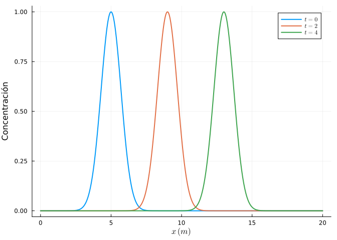
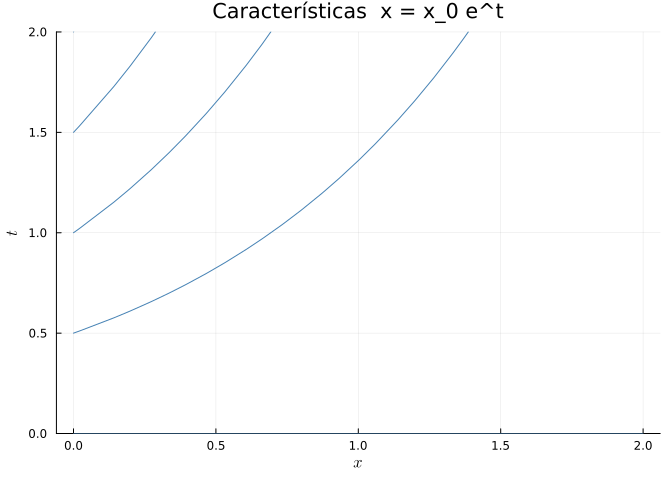
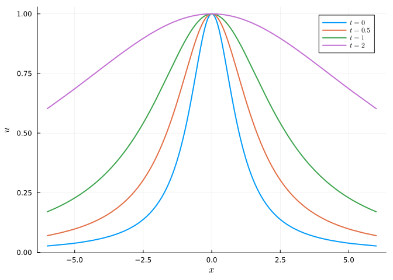
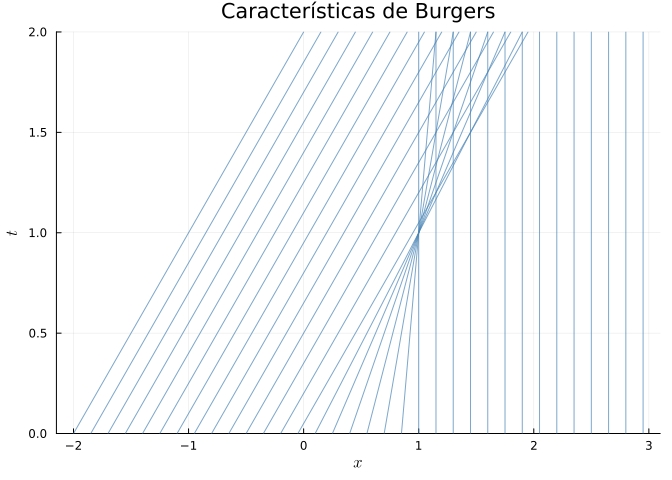
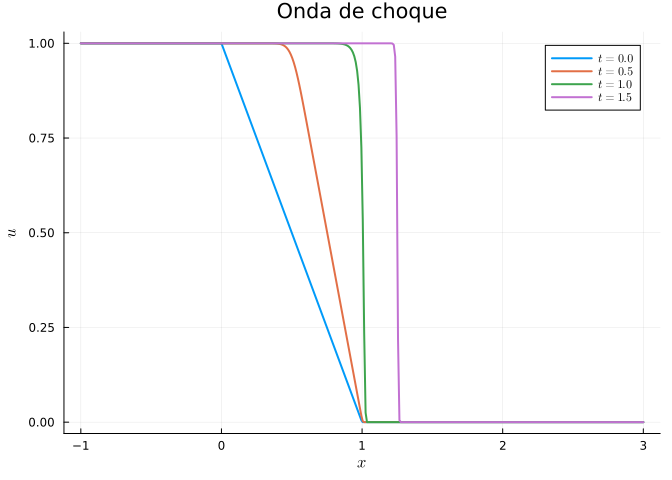
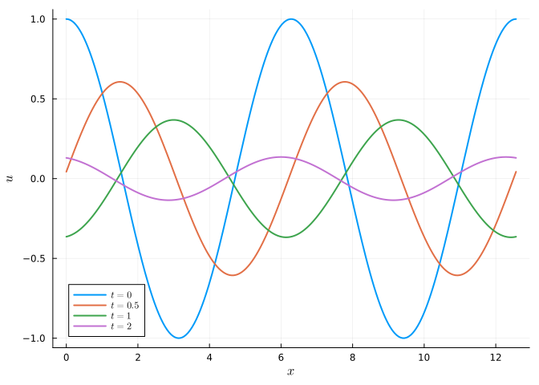

7 Ecuaciones en derivadas parciales de primer orden
Una ecuación en derivadas parciales (EDP) de primer orden relaciona una función incógnita \(u(x, t)\) de varias variables con sus derivadas parciales de primer orden. La EDP lineal de primer orden más importante es la ecuación de transporte (o advección)
\[ u_t + c\,u_x = 0, \]
cuya solución es \(u(x,t) = u_0(x - ct)\). El perfil inicial \(u_0\) se propaga sin deformarse con velocidad \(c\). El método de las características reduce una EDP de primer orden a un sistema de EDOs a lo largo de curvas privilegiadas del plano \((x, t)\).
7.1 Ejercicios resueltos
Para la realización de esta práctica se requieren los siguientes paquetes:
using SymPyPythonCall # Cálculo simbólico y resolución de EDPs.
using Plots # Dibujo de gráficas y animaciones.
using LaTeXStrings # Código LaTeX en los gráficos.
NotaVersiones de Julia y de los paquetes utilizados
Status `~/.julia/environments/v1.12/Project.toml` [b964fa9f] LaTeXStrings v1.4.0 [91a5bcdd] Plots v1.41.6 [bc8888f7] SymPyPythonCall v0.5.1
Ejercicio 7.1 Transporte de un contaminante en un río (ingeniería ambiental). Un vertido de contaminante en un río de corriente uniforme \(c = 2\) m/s satisface la ecuación de transporte
\[ u_t + 2\,u_x = 0, \qquad u(x, 0) = e^{-(x-5)^2}, \]
donde \(u(x,t)\) es la concentración y el perfil inicial es una campana centrada en \(x = 5\) m.
Verificar simbólicamente que \(u(x,t) = u_0(x - 2t)\) es solución.
NotaAyudaDefinir \(u(x,t) = \exp(-(x - 2t - 5)^2)\) con
SymPyy comprobar que \(u_t + 2u_x = 0\) condiff.TipSoluciónusing SymPyPythonCall @syms x t u = exp(-(x - 2t - 5)^2) simplify(diff(u, t) + 2 * diff(u, x))\(0\)
El resultado es 0. La onda viajera \(u_0(x - ct)\) resuelve la ecuación de transporte, como predice el método de las características (las rectas \(x - 2t = \text{cte}\)).
Dibujar el perfil de concentración en los instantes \(t = 0, 2, 4\) s y una animación del transporte.
TipSoluciónusing Plots, LaTeXStrings u0(ξ) = exp(-(ξ - 5)^2) usol(x, t) = u0(x - 2t) plt = plot(xlab = L"x \; (m)", ylab = "Concentración") for τ in (0, 2, 4) plot!(plt, x -> usol(x, τ), 0, 20, lw = 2, label = L"t=%$τ") end plt
anim = @animate for τ in 0:0.1:6 plot(x -> usol(x, τ), 0, 20, lw = 2, ylims = (0, 1.1), legend = false, xlab = L"x", ylab = "Concentración", title = "t = $(round(τ,digits=1)) s") end gif(anim, "transporte.gif", fps = 15)La campana viaja aguas abajo sin cambiar de forma ni de altura: la advección pura solo traslada el contaminante. (Para que además se disperse habría que añadir un término difusivo \(D u_{xx}\), que se estudia en el capítulo siguiente.)
Ejercicio 7.2 Método de las características. Resolver el problema de valores iniciales
\[ u_t + x\,u_x = 0, \qquad u(x, 0) = \frac{1}{1 + x^2}. \]
Escribir las ecuaciones de las características y resolverlas para hallar la solución.
NotaAyudaLas características cumplen \(\dfrac{dx}{dt} = x\), a lo largo de las cuales \(u\) es constante. Resolver la EDO de \(x(t)\) e invertir para expresar la constante en función de \((x, t)\).
TipSoluciónA lo largo de las características \(\frac{dx}{dt} = x\), es decir \(x(t) = x_0 e^{t}\), la solución es constante: \(u = u_0(x_0) = u_0(x e^{-t})\). Verificamos:
using SymPyPythonCall @syms x t u = 1 / (1 + (x * exp(-t))^2) simplify(diff(u, t) + x * diff(u, x))\(0\)
La solución es \(u(x, t) = \dfrac{1}{1 + x^2 e^{-2t}}\).
Dibujar las curvas características en el plano \((x, t)\) y el perfil de \(u\) en varios instantes.
TipSoluciónusing Plots, LaTeXStrings plt1 = plot(xlab = L"x", ylab = L"t", title = "Características x = x_0 e^t", legend = false, ylims = (0, 2)) for x0 in -3:0.5:3 plot!(plt1, τ -> x0 * exp(τ), 0, 2, color = :steelblue) end plt1
usol(x, t) = 1 / (1 + x^2 * exp(-2t)) plt2 = plot(xlab = L"x", ylab = L"u") for τ in (0, 0.5, 1, 2) plot!(plt2, x -> usol(x, τ), -6, 6, lw = 2, label = L"t=%$τ") end plt2
Las características divergen exponencialmente desde el origen, y el perfil inicial se “estira” ensanchándose con el tiempo, aunque conservando su valor máximo.
Ejercicio 7.3 Formación de ondas de choque: tráfico rodado. El modelo de tráfico de Lighthill–Whitham lleva a la ecuación de Burgers no lineal
\[ u_t + u\,u_x = 0, \qquad u(x, 0) = u_0(x), \]
donde \(u\) es (proporcional a) la velocidad del flujo. Cuando las características se cruzan aparece una onda de choque (un atasco).
Para el dato inicial decreciente \(u_0(x) = \begin{cases} 1 & x < 0 \\ 1 - x & 0 \le x \le 1 \\ 0 & x > 1\end{cases}\), dibujar las características \(x = x_0 + u_0(x_0)\,t\) y determinar el instante en que se cruzan por primera vez (formación del choque).
NotaAyudaEn la ecuación de Burgers cada característica es una recta de pendiente dada por el valor inicial: \(x = x_0 + u_0(x_0)\,t\). Las que salen de la rampa decreciente se cruzan; el tiempo de choque es \(t^* = -1/\min u_0'(x)\).
TipSoluciónusing Plots, LaTeXStrings u0(x) = x < 0 ? 1.0 : (x <= 1 ? 1 - x : 0.0) plt = plot(xlab = L"x", ylab = L"t", legend = false, ylims = (0, 2), title = "Características de Burgers") for x0 in -2:0.15:3 plot!(plt, [x0, x0 + u0(x0)*2], [0, 2], color = :steelblue, alpha = 0.7) end plt
En la rampa \(0\le x_0\le 1\) se tiene \(u_0'(x_0) = -1\), luego el tiempo de choque es \(t^* = -1/(-1) = 1\): todas esas características se cruzan simultáneamente en \(t = 1\), formando el frente del atasco.
Resolver numéricamente la ecuación de Burgers con un esquema conservativo y dibujar cómo la rampa suave se convierte en una discontinuidad (el choque).
NotaAyudaUsar un esquema upwind (Godunov) de volúmenes finitos: \(u_i^{n+1} = u_i^n - \frac{\Delta t}{\Delta x}(F_{i+1/2} - F_{i-1/2})\) con el flujo numérico \(F = \frac12 u^2\) resuelto según el signo de la velocidad.
TipSoluciónf(u) = 0.5u^2 # Flujo de Godunov para la ecuación de Burgers (f convexa). function flujo(uL, uR) if uL <= uR # onda de rarefacción uL <= 0 <= uR ? f(0.0) : min(f(uL), f(uR)) else # onda de choque max(f(uL), f(uR)) end end function godunov_burgers(u0f, xs, T; cfl = 0.4) dx = xs[2] - xs[1] u = u0f.(xs) t = 0.0 while t < T dt = cfl * dx / maximum(abs.(u) .+ 1e-9) dt = min(dt, T - t) F = [flujo(u[i], u[i+1]) for i in 1:length(u)-1] u[2:end-1] .-= dt/dx .* (F[2:end] .- F[1:end-1]) t += dt end u end xs = range(-1, 3, length = 400) plt = plot(xlab = L"x", ylab = L"u", title = "Onda de choque") for T in (0.0, 0.5, 1.0, 1.5) u = godunov_burgers(u0, xs, T) plot!(plt, xs, u, lw = 2, label = L"t=%$T") end plt
La rampa inicial se va inclinando hasta hacerse vertical en \(t = 1\) y a partir de ahí se propaga como una discontinuidad (el frente de un atasco) que avanza a la velocidad del choque dada por la condición de Rankine–Hugoniot.
Ejercicio 7.4 EDP lineal con término fuente. Resolver
\[ u_t + 3\,u_x = -u, \qquad u(x, 0) = \cos x, \]
que modela un contaminante transportado con velocidad 3 que además se degrada exponencialmente.
NotaAyuda
A lo largo de las características \(x = x_0 + 3t\), la EDP se reduce a la EDO \(\frac{du}{dt} = -u\), cuya solución es \(u = u_0(x_0)e^{-t}\). Sustituir \(x_0 = x - 3t\).
TipSolución
Sobre la característica \(x = x_0 + 3t\), \(\frac{du}{dt} = -u\) da \(u = u_0(x_0)e^{-t}\), luego
\[ u(x, t) = e^{-t}\cos(x - 3t). \]
Verificación:
using SymPyPythonCall
@syms x t
u = exp(-t) * cos(x - 3t)
simplify(diff(u, t) + 3 * diff(u, x) + u)\(0\)
using Plots, LaTeXStrings
usol(x, t) = exp(-t) * cos(x - 3t)
plt = plot(xlab = L"x", ylab = L"u")
for τ in (0, 0.5, 1, 2)
plot!(plt, x -> usol(x, τ), 0, 4π, lw = 2, label = L"t=%$τ")
end
plt
La onda coseno viaja a la derecha con velocidad 3 mientras su amplitud decae como \(e^{-t}\): transporte con degradación.
7.2 Ejercicios propuestos
Ejercicio 7.5 Resolver \(u_t + (1 + x^2)u_x = 0\) con \(u(x,0) = e^{-x^2}\) por el método de las características y dibujar las curvas características.
Ejercicio 7.6 Demografía. La ecuación de McKendrick \(n_t + n_a = -\mu\, n\) describe una población estructurada por edad \(a\). Resolverla por características para \(\mu\) constante y \(n(a, 0) = n_0(a)\) dado.
Ejercicio 7.7 Para la ecuación de Burgers con dato inicial creciente \(u_0(x) = 0\) si \(x<0\), \(u_0(x)=1\) si \(x>0\), dibujar las características y comprobar que se forma una onda de rarefacción (abanico) en lugar de un choque.
Ejercicio 7.8 Finanzas. La EDP de primer orden \(V_t + rS\,V_S = rV\) (versión sin difusión, de transporte) modela la evolución de un activo con crecimiento a tasa \(r\). Resolverla por características con dato final \(V(S, T) = \max(S - K, 0)\).